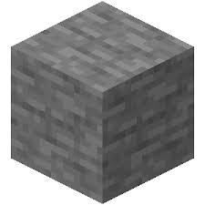
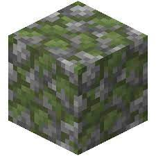
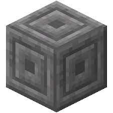
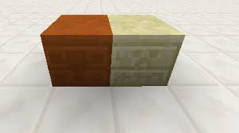
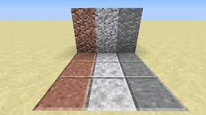
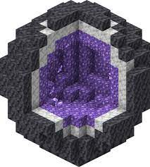
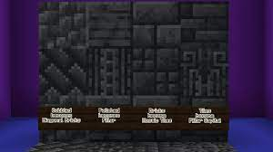

Horniny v Overworldu
V overwoldu najdeš mnoho typů kamení, ale nejběznější je stone a jeho vytěžený bratr cobble

Tito dva mají, ale mnoho forem a mezi ně zapadá mossy cobble, smooth stone a stone bricky a dokonce záhadný chiseled stone bricks
 
Dále se v pouštích objevují dva typy sandstonu: normální a červený
Oba dva mají chiseled varianty na kterých jsou vyobrazeni mobové a ti jsou creeper a wither

Dále naše výprava zaměřuje do jeskyň kde najdeme opravdovou biodiverzitu
Ze začátku najdeme trojici andesite, diorite a granite

Když půjdeme hlouběji můžeme narazit na geody ve kterých se nachází calcite a tuff

Úplně na spodu světa najdeme deepslate a nezničitelný bedrock, pod kterým se nachází nekonečné nic

Každý kámen v existenci